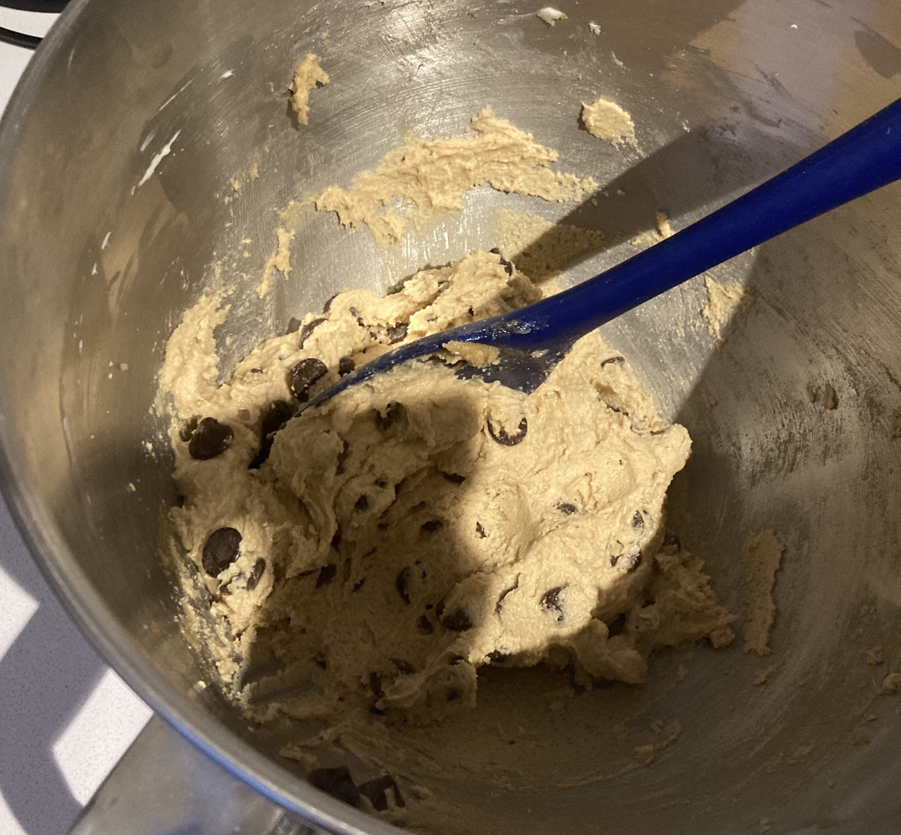

Melt the butter in a heavy bottomed saucepan over the lowest heat possible, stirring occasionally.
In a bowl, whisk together the flour, baking powder, baking soda, and salt. Set aside. Pour the melted butter into a large bowl and whisk in the sugars. Add the eggs, one at a time, whisking until just combined. Stir in the vanilla. Use a wooden spoon or silicone spatula to stir in the dry ingredients until barely blended. Stir in the chocolate.
Refrigerate for at least 5 minutes, then roll into ~3 tablespoon balls. Makes ~28 cookies. Holding the dough in the fridge for a day or more will allow the flour to absorb the liquid, leading to a better flavor. Can be frozen in balls to be baked later.
Preheat the oven to 360°F. Line 2 rimmed baking sheets with parchment paper and arrange cookies on the prepared pans, leaving 3 inches between each cookie. Sprinkle with sea salt (important) and bake until the tops are cracked and lightly golden but still a bit unbaked, 10-12 minutes, rotating the pan halfway through. Under baked is essential and preferred to overbaked. Cool on the pan for 2 minutes, the move to a wire rack to cool completely.
